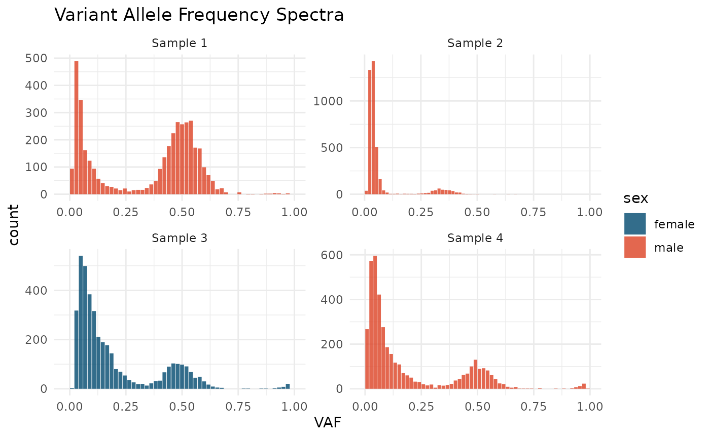

Get Started
get_started.RmdPage under construction
library(cevomod)
#>
#> Attaching package: 'cevomod'
#> The following object is masked from 'package:stats':
#>
#> filter
library(patchwork)
library(tidyverse)
#> ── Attaching core tidyverse packages ──────────────────────── tidyverse 2.0.0 ──
#> ✔ dplyr 1.1.2 ✔ readr 2.1.4
#> ✔ forcats 1.0.0 ✔ stringr 1.5.0
#> ✔ ggplot2 3.4.2 ✔ tibble 3.2.1
#> ✔ lubridate 1.9.2 ✔ tidyr 1.3.0
#> ✔ purrr 1.0.1
#> ── Conflicts ────────────────────────────────────────── tidyverse_conflicts() ──
#> ✖ dplyr::filter() masks cevomod::filter(), stats::filter()
#> ✖ dplyr::lag() masks stats::lag()
#> ℹ Use the conflicted package (<http://conflicted.r-lib.org/>) to force all conflicts to become errors
data("tcga_brca_test")Cumulative tails
tcga_brca_test %>%
plot_cumulative_tails(size = 0.5, scale_y = FALSE)SFS with mut annotation
plot_SFS(tcga_brca_test, geom = "line") +
layer_mutations(tcga_brca_test, drivers = "BRCA", shape = "variant_classification")
#> Warning in ggrepel::geom_label_repel(aes(x = .data$VAF, shape = .data[[shape]],
#> : Ignoring unknown aesthetics: shape
#> Warning: ggrepel: 59 unlabeled data points (too many overlaps). Consider
#> increasing max.overlaps
plot_SFS(tcga_brca_test) +
layer_mutations(tcga_brca_test, drivers = "BRCA", shape = "impact")
#> Warning in geom_bar(join_aes(bar_mapping, mapping), stat = "identity", alpha =
#> alpha, : Ignoring unknown aesthetics: width
#> Warning in ggrepel::geom_label_repel(aes(x = .data$VAF, shape = .data[[shape]],
#> : Ignoring unknown aesthetics: shape
#> Warning: ggrepel: 15 unlabeled data points (too many overlaps). Consider
#> increasing max.overlaps
#> Warning: ggrepel: 8 unlabeled data points (too many overlaps). Consider
#> increasing max.overlaps
#> Warning: ggrepel: 19 unlabeled data points (too many overlaps). Consider
#> increasing max.overlaps
#> Warning: ggrepel: 16 unlabeled data points (too many overlaps). Consider
#> increasing max.overlapsSNVs plots
p1 <- tcga_brca_test %>%
plot_mutations(drivers = "BRCA", shape = "variant_classification")
p2 <- tcga_brca_test %>%
plot_mutations(
genes = c("TP53", "BRCA1", "KMT2C", "ERBB2"),
mark_genes = c("TP53", "BRCA1", "ERBB2"),
y = "samples",
shape = "impact")
p1 / p2 + plot_layout(heights = c(3, 1))M(f) ~ 1/f
tcga_brca_test %>%
plot_Mf_1f() +
scale_color_brewer(palette = "Dark2")
tcga_brca_test %>%
plot_Mf_1f(from = 0.05, to = 0.5, scale = FALSE)Fit neutral models
cd <- tcga_brca_test |>
calc_Mf_1f() |>
calc_SFS() |>
fit_williams_neutral_models(rsq_treshold = 0.99)
#> Calculating Williams's M(f) ~ 1/f statistics
#> Fitting williams neutral models...
plot(cd$models$Mf_1f, from = 0.05, to = 0.3, scale = FALSE) +
layer_lm_fits(cd) +
scale_color_pnw()
fake_VAFs <- generate_neutral_snvs(mut_rate = 10, sample_below = 0.05, resolution = 0.001)
fake_VAFs
#> # A tibble: 255,760 × 15
#> patient_id sample_id sample chrom pos gene_symbol ref alt ref_reads
#> <chr> <chr> <chr> <chr> <int> <chr> <chr> <chr> <dbl>
#> 1 S1 S1 tumor NA NA NA NA NA 99
#> 2 S1 S1 tumor NA NA NA NA NA 99
#> 3 S1 S1 tumor NA NA NA NA NA 99
#> 4 S1 S1 tumor NA NA NA NA NA 99
#> 5 S1 S1 tumor NA NA NA NA NA 99
#> 6 S1 S1 tumor NA NA NA NA NA 99
#> 7 S1 S1 tumor NA NA NA NA NA 99
#> 8 S1 S1 tumor NA NA NA NA NA 99
#> 9 S1 S1 tumor NA NA NA NA NA 99
#> 10 S1 S1 tumor NA NA NA NA NA 99
#> # ℹ 255,750 more rows
#> # ℹ 6 more variables: alt_reads <dbl>, impact <chr>, VAF <dbl>, DP <dbl>,
#> # n <dbl>, mut_id <chr>